本工程覆盖论文主要公式、预测与决策模型、多期离线评估、参数和数据量敏感性分析，以及模拟干预的匹配、回归、双重差分流程。完整训练实验使用自生成数据；作者披露数据另行计算。它是可运行的方法重建，不能等同于原始京东数据上的逐数值精确复现，也不能替代论文原始实地实验。
离线模型及附录实验保留V3结果，新增两个现场校准模型。匹配模型在2—8天提前期、可能交叉、混合积欠/丢失销售环境中，以实际滚动成本训练；原闭式标签未用于这个环境。校准头冻结离线MQ-RNN表示并修正Normal基库存目标，这是工程扩展，不是原作者现场神经网络的精确恢复。
全部商品配对比较：Normal成本35907.17，旧迁移策略57666.39，新匹配校准策略35334.84。新版相对旧迁移策略变化-38.73%，相对Normal变化-1.59%。因此即使训练条件已修正，仍不能声称恢复了论文现场降本结论；其他控制策略及独立面板也全部公开。
配置 quick；80 个合成商品—仓库序列 × 420 天 = 33,600 行日需求；训练样本 1,932，验证样本 362。随机种子 20261019。设备 cuda，NVIDIA GeForce RTX 4060 Laptop GPU。本次入口用时 84.3 秒（重用缓存时不代表原训练总时长，逐模型时间见 tables/train 与 logs/model）。每个非默认设置均实际重新训练，最优轮次由验证集选择。
离线E2E平均30天总成本5254.29，Normal为2852.15，相对变化+84.22%。模拟现场处理组总成本40009.91，对照组39258.09，相对变化+1.92%。本次模拟现场没有重现论文的总成本下降结论；程序执行通过不代表论文所有实证结论已得到重复支持。
下面是同一批商品、同一需求和初始库存/在途订单的配对比较，不能与后面的匹配组均值混算。V3迁移、离线条件校准、匹配条件校准和Normal全部保留。旧测试期已用于问题诊断，属于探索评估；额外三组固定独立面板仅用于评估，没有按结果选权重。训练条件匹配不保证测试成本更低。
| environment | policy | holding_cost | stockout_cost | total_cost | stockout_ratio | relative_to_Normal_pct | paired_difference | paired_ci_low | paired_ci_high | n_series |
|---|---|---|---|---|---|---|---|---|---|---|
| lead1_backorder | Normal | 25806.9913 | 4035.1680 | 29842.1593 | 0.0704 | 0.0000 | 0.0000 | 0.0000 | 0.0000 | 80 |
| lead1_backorder | V3_Transfer | 7214.8346 | 126608.4606 | 133823.2951 | 0.5700 | 348.4370 | 103981.1358 | 74237.4705 | 133724.8011 | 80 |
| lead1_backorder | V4_OfflineCalibrator | 23630.5407 | 5385.4366 | 29015.9773 | 0.0896 | -2.7685 | -826.1820 | -1221.4477 | -430.9163 | 80 |
| lead1_backorder | V4_MatchedCalibrator | 23692.1939 | 5338.6735 | 29030.8674 | 0.0892 | -2.7186 | -811.2919 | -1196.9913 | -425.5925 | 80 |
| lead1_hybrid | Normal | 25806.9913 | 3809.1859 | 29616.1772 | 0.0704 | 0.0000 | 0.0000 | 0.0000 | 0.0000 | 80 |
| lead1_hybrid | V3_Transfer | 8035.0810 | 29903.0522 | 37938.1332 | 0.4821 | 28.0994 | 8321.9560 | 3900.0889 | 12743.8232 | 80 |
| lead1_hybrid | V4_OfflineCalibrator | 23629.0894 | 4986.4701 | 28615.5595 | 0.0896 | -3.3786 | -1000.6177 | -1374.3685 | -626.8669 | 80 |
| lead1_hybrid | V4_MatchedCalibrator | 23690.6937 | 4948.5482 | 28639.2418 | 0.0892 | -3.2987 | -976.9354 | -1342.2242 | -611.6466 | 80 |
| lead2_backorder | Normal | 28842.0112 | 7065.1556 | 35907.1668 | 0.0900 | 0.0000 | 0.0000 | 0.0000 | 0.0000 | 80 |
| lead2_backorder | V3_Transfer | 10754.4079 | 104185.1739 | 114939.5818 | 0.5029 | 220.1021 | 79032.4151 | 54432.2886 | 103632.5416 | 80 |
| lead2_backorder | V4_OfflineCalibrator | 27068.6824 | 8269.9332 | 35338.6156 | 0.1029 | -1.5834 | -568.5512 | -945.5558 | -191.5466 | 80 |
| lead2_backorder | V4_MatchedCalibrator | 27059.5006 | 8275.3443 | 35334.8449 | 0.1029 | -1.5939 | -572.3219 | -953.4846 | -191.1591 | 80 |
| lead2_hybrid | Normal | 28842.0112 | 7065.1556 | 35907.1668 | 0.0900 | 0.0000 | 0.0000 | 0.0000 | 0.0000 | 80 |
| lead2_hybrid | V3_Transfer | 10911.1629 | 46755.2309 | 57666.3938 | 0.4792 | 60.5986 | 21759.2270 | 14136.0692 | 29382.3848 | 80 |
| lead2_hybrid | V4_OfflineCalibrator | 27068.6824 | 8269.9332 | 35338.6156 | 0.1029 | -1.5834 | -568.5512 | -945.5558 | -191.5466 | 80 |
| lead2_hybrid | V4_MatchedCalibrator | 27059.5006 | 8275.3443 | 35334.8449 | 0.1029 | -1.5939 | -572.3219 | -953.4846 | -191.1591 | 80 |
| panel_seed | policy | n_series | total_cost | holding_cost | stockout_cost | stockout_ratio | relative_to_Normal_pct | paired_difference | paired_ci_low | paired_ci_high |
|---|---|---|---|---|---|---|---|---|---|---|
| 20261020 | Normal | 80 | 37343.1180 | 29141.7300 | 8201.3880 | 0.1067 | 0.0000 | 0.0000 | 0.0000 | 0.0000 |
| 20261020 | V3_Transfer | 80 | 68472.4979 | 9569.2600 | 58903.2378 | 0.5258 | 83.3604 | 31129.3798 | 23145.3413 | 39113.4183 |
| 20261020 | V4_OfflineCalibrator | 80 | 37135.6005 | 27351.6433 | 9783.9572 | 0.1208 | -0.5557 | -207.5176 | -793.6394 | 378.6043 |
| 20261020 | V4_MatchedCalibrator | 80 | 37133.7459 | 27339.1627 | 9794.5832 | 0.1217 | -0.5607 | -209.3721 | -797.5478 | 378.8035 |
| 20261021 | Normal | 80 | 37332.2458 | 28325.8872 | 9006.3586 | 0.1021 | 0.0000 | 0.0000 | 0.0000 | 0.0000 |
| 20261021 | V3_Transfer | 80 | 67740.2010 | 8866.2994 | 58873.9016 | 0.5375 | 81.4523 | 30407.9552 | 18981.3096 | 41834.6009 |
| 20261021 | V4_OfflineCalibrator | 80 | 37032.5294 | 26487.2112 | 10545.3182 | 0.1162 | -0.8028 | -299.7164 | -745.3193 | 145.8864 |
| 20261021 | V4_MatchedCalibrator | 80 | 37026.1085 | 26483.6157 | 10542.4928 | 0.1158 | -0.8200 | -306.1373 | -748.4973 | 136.2227 |
| 20261022 | Normal | 80 | 32363.0739 | 24149.3378 | 8213.7361 | 0.1175 | 0.0000 | 0.0000 | 0.0000 | 0.0000 |
| 20261022 | V3_Transfer | 80 | 60538.5359 | 8233.0494 | 52305.4865 | 0.5450 | 87.0605 | 28175.4620 | 21193.0352 | 35157.8888 |
| 20261022 | V4_OfflineCalibrator | 80 | 32306.6994 | 22668.0705 | 9638.6288 | 0.1333 | -0.1742 | -56.3745 | -481.3187 | 368.5696 |
| 20261022 | V4_MatchedCalibrator | 80 | 32314.2024 | 22662.4412 | 9651.7612 | 0.1337 | -0.1510 | -48.8715 | -476.3892 | 378.6462 |
Figure 2 展示固定前三个商品的真实需求、神经网络预测中位数、10%—90%预测分位带，以及七种方法的实际模拟库存成本。阴影是需求预测分位带，不是均值置信区间。成本表由全部测试商品汇总，每种策略独立滚动自己的库存和在途订单；不按效果挑选商品，不把原论文数值填进模拟结果。
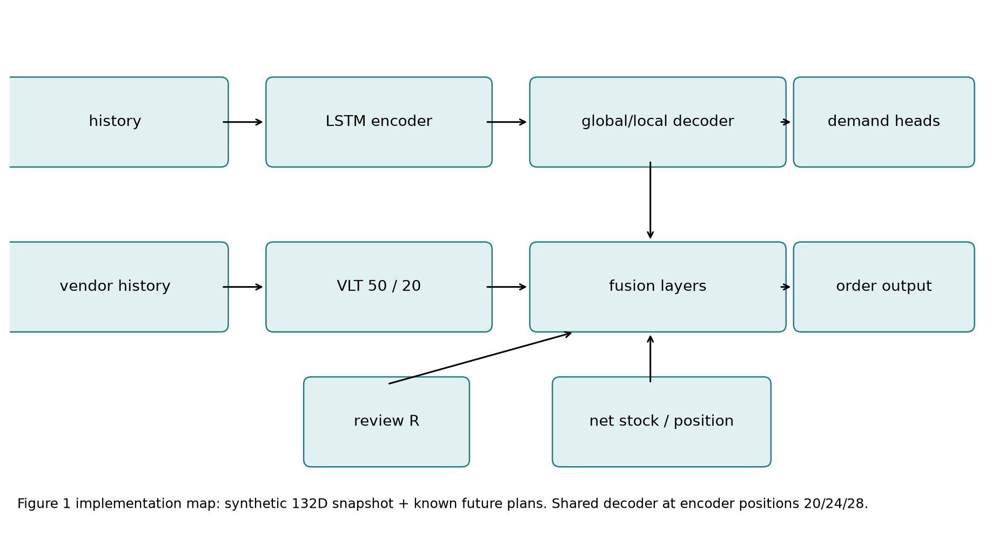
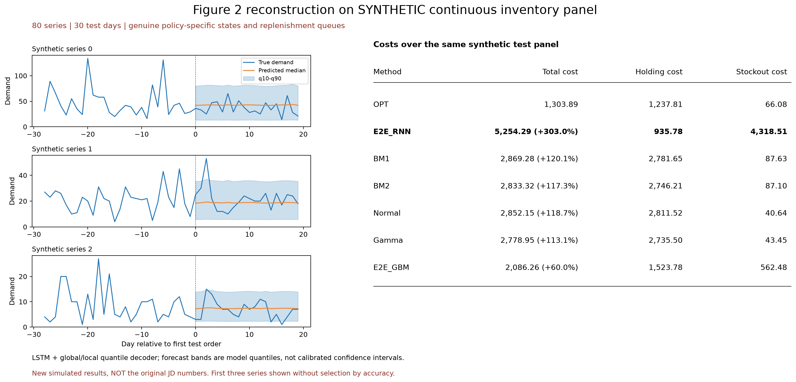
| method | holding_cost | stockout_cost | total_cost | turnover_days | stockout_ratio | relative_gap_pct |
|---|---|---|---|---|---|---|
| OPT | 1237.8067 | 66.0822 | 1303.8889 | 2.9884 | 0.0129 | 0.0000 |
| E2E_RNN | 935.7835 | 4318.5061 | 5254.2896 | 2.3919 | 0.3329 | 302.9707 |
| BM1 | 2781.6500 | 87.6313 | 2869.2813 | 7.3310 | 0.0208 | 120.0557 |
| BM2 | 2746.2143 | 87.1025 | 2833.3168 | 7.2212 | 0.0225 | 117.2974 |
| Normal | 2811.5188 | 40.6355 | 2852.1543 | 7.1009 | 0.0092 | 118.7421 |
| Gamma | 2735.5023 | 43.4472 | 2778.9495 | 6.9383 | 0.0112 | 113.1278 |
| E2E_GBM | 1523.7782 | 562.4804 | 2086.2586 | 3.9023 | 0.0867 | 60.0028 |
| second_level_category | third_level_category | source |
|---|---|---|
| Tea set | Tea set combination | Paper Table 1, p.767, reference transcription only |
| Tea set | Tea cup | Paper Table 1, p.767, reference transcription only |
| Tea set | Tea kettle | Paper Table 1, p.767, reference transcription only |
| Tea set | Tea tray | Paper Table 1, p.767, reference transcription only |
| Tea set | Tea can | Paper Table 1, p.767, reference transcription only |
| Tea set | Tea bowl | Paper Table 1, p.767, reference transcription only |
| Tea set | Tea accessories | Paper Table 1, p.767, reference transcription only |
| Tea set | Tea-ware decoration | Paper Table 1, p.767, reference transcription only |
| Tea set | Coffee set | Paper Table 1, p.767, reference transcription only |
| Tea set | Tea travel set | Paper Table 1, p.767, reference transcription only |
| Pastry essentials & seasoning | Baking supplies | Paper Table 1, p.767, reference transcription only |
| Pastry essentials & seasoning | Flour | Paper Table 1, p.767, reference transcription only |
| Pastry essentials & seasoning | Mixed grains | Paper Table 1, p.767, reference transcription only |
| Pastry essentials & seasoning | Rice | Paper Table 1, p.767, reference transcription only |
| Pastry essentials & seasoning | Oil | Paper Table 1, p.767, reference transcription only |
| Pastry essentials & seasoning | Seasonings | Paper Table 1, p.767, reference transcription only |
| Pastry essentials & seasoning | Dry foods | Paper Table 1, p.767, reference transcription only |
| Pastry essentials & seasoning | Convenience foods | Paper Table 1, p.767, reference transcription only |
| category | n_series |
|---|---|
| 0 | 13 |
| 1 | 16 |
| 2 | 18 |
| 3 | 14 |
| 4 | 8 |
| 5 | 11 |
| parameter | paper_reference | paper_reported_range | implementation |
|---|---|---|---|
| MQRNN hidden size | 50 | 30,40,50,60 | 50 |
| VLT layers | 50,20 | 100/20;50/20;30/20 | 50,20 |
| Integration layers | 100,100 | 1/2/3/4 layers of100 | 100,100 |
| Learning rate | 0.001 | 0.0001,0.001,0.01 | 0.001 |
| Learning-rate decay | 1e-4 | 1e-5,1e-4,1e-3 | 0; no decay in this run |
| Momentum | 0.85 | 0.8,0.85,0.9 | 0.85 if SGD; not applicable to Adam |
| Mini-batch size | 64 | 64,128,256 | 128 |
| Initialization | Gaussian(0,0.01) | Gaussian,Uniform | Gaussian(0,0.01); output biases calibrated |
| Activation | ReLU | ReLU,tanh | ReLU; softplus positive output; standard LSTM gates |
| Dropout | 0.2 | 0.1,0.2,0.3,0.4 | 0.2 |
| Optimizer | SGD family discussed | details incomplete | adam |
| Epochs | not reported | not reported | 2 |
| Forecast horizon | not reported | not reported | 20 |
| Quantiles | count ambiguity in text | see paper sec4.2 | 0.1,0.5,0.6,0.7,0.8,0.9,0.95 + mean |
| Loss and lambda weights | generic losses; small positive lambdas | not specified | SmoothL1 + 0.1 demand loss + 0.1 VLT MSE |
式(1)—(3)：以逐日持有成本和缺货成本构成多期目标，并维护净库存与订单到货队列；本文实现学习策略而非声称精确求解所有随机动态规划。式(4)—(6)：在离线无订单交叉条件下，用实际未来需求构造条件事后最优订货标签，训练时使用已成熟标签；独立线性规划测试验证其有限时域OPT。式(7)：Normal 使用随机提前期方差项；式(8)：Gamma 使用形状—尺度参数近似。式(9)—(10)：BM1累计需求分位数订货与BM2逐日预测路径的多期成本最优化。式(11)：含截距及干预前协变量的处理组回归；后续DID按原商品ID聚类。现场混合积欠/丢失销售是依据正文描述单独定义的模拟规则。原文推导和识别假设的解释见项目根目录 docs/公式与代码对应.md。
作者包缺少完整训练面板、原神经网络训练源码、权重及全部超参数。此处独立实现LSTM的MQ-RNN、全局/共享局部解码器、三个训练fork、VLT 50→20网络、100→100融合网络及真实LightGBM。累计需求分位数由单独监督头学习，没有把每日分位数直接相加。132维输入的组成是本工程公开定义，不声称与私有特征完全相同。预测跨度20天、SmoothL1订货损失加预测/VLT辅助损失及其权重、7个预测分位点加均值、Adam、批量256均是公开记录的重建选择；默认训练轮数见配置。论文未报告的选择不作为原作者设定。
定标只用第0—119天；训练标签最晚第279天，验证标签最晚第329天，测试第330—359天。在线输入只含已发生需求、已完成供应商记录、静态属性及事先已知促销/日历。当前与下一单真实提前期只进入训练标签或模拟器，不作为在线预测特征。每个策略执行到货→订货→需求→计费，不重置历史缺货，订货非负。OPT截断最后到货区间，BM截断保护期，平稳策略没有专门终端价值训练，因此与OPT差距包含期末效应，不能全部归因于模型预测质量。
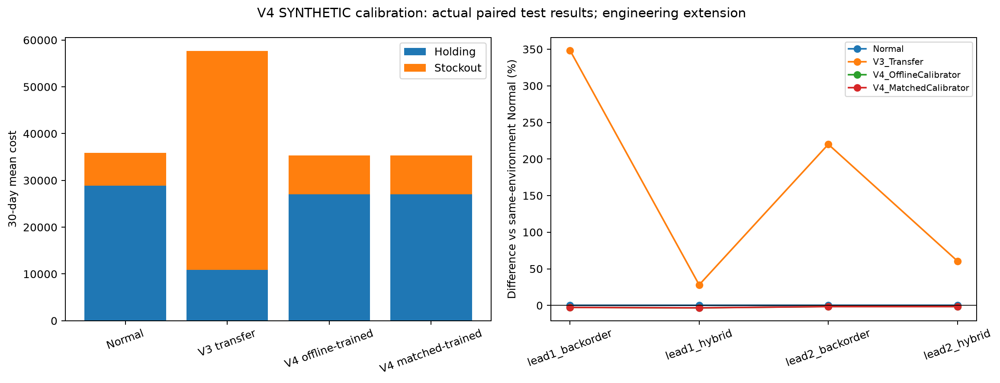
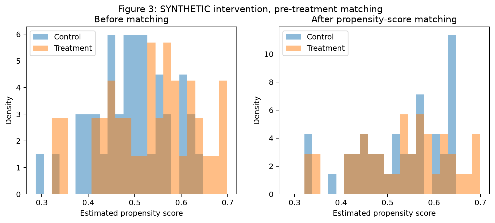
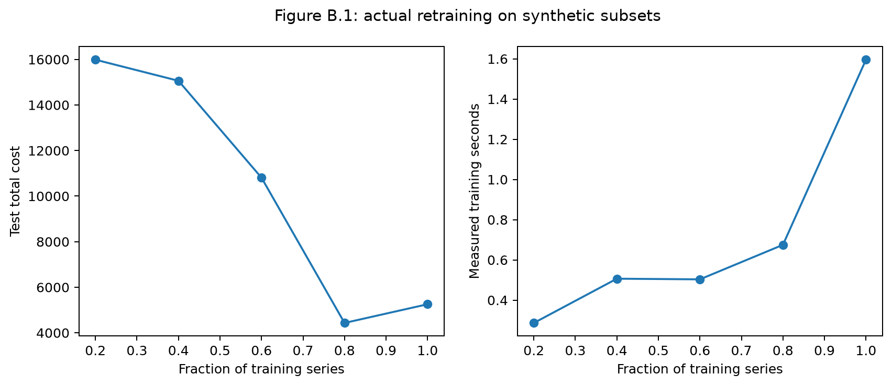
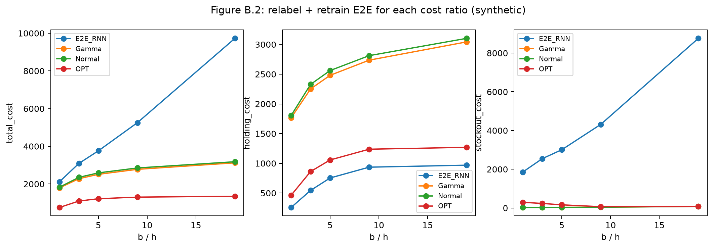
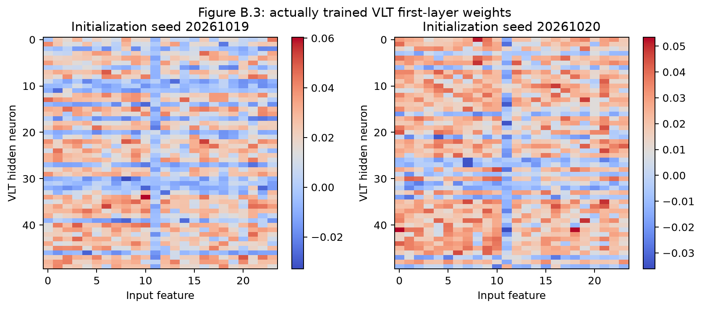
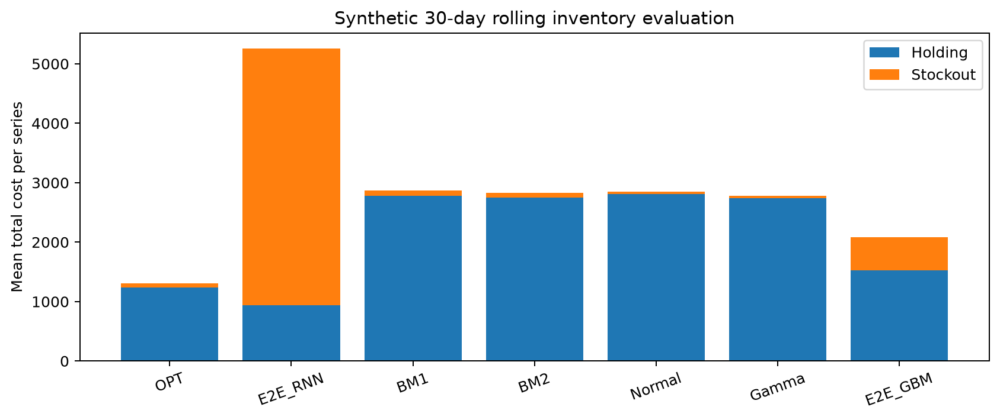
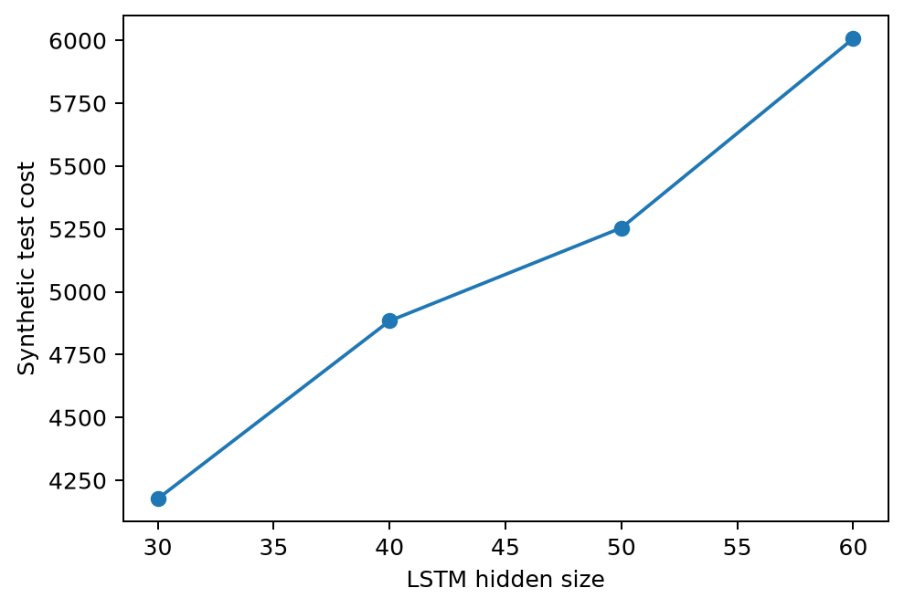
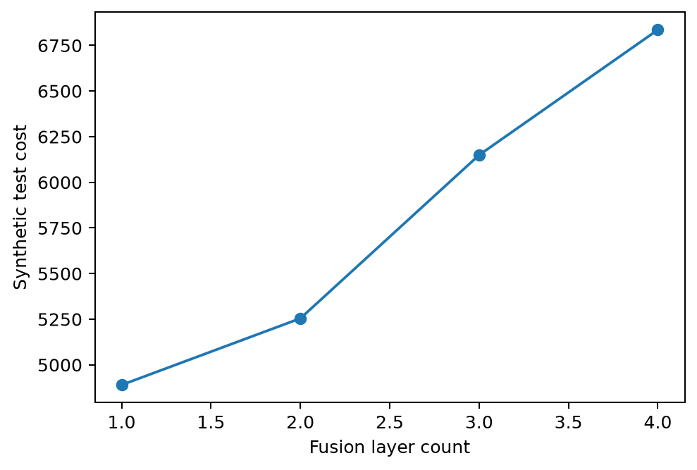
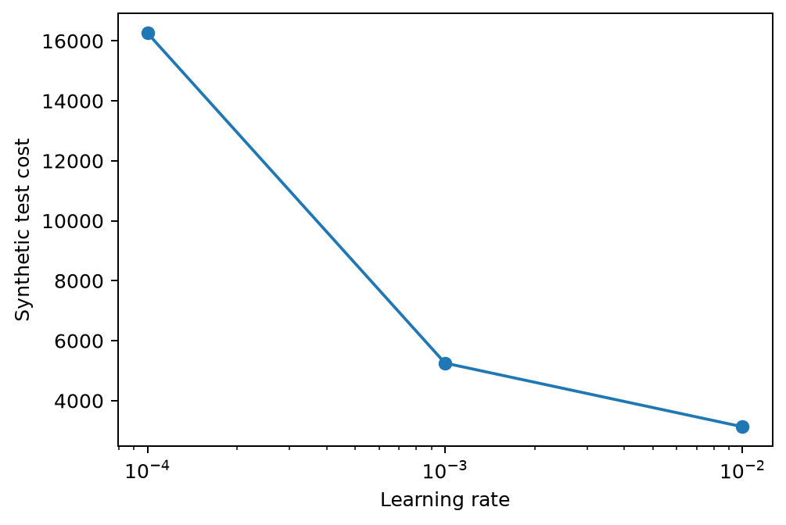
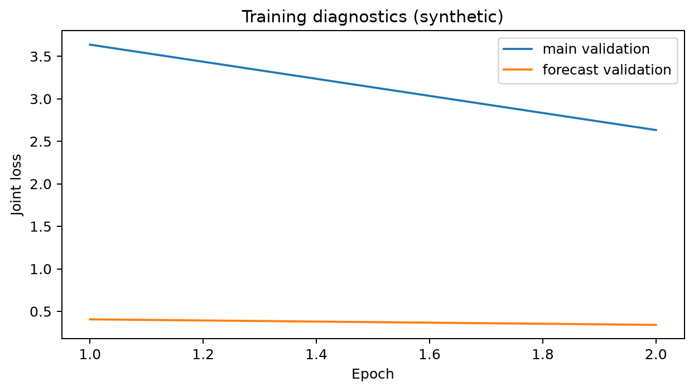
| value | method | holding_cost | stockout_cost | total_cost | turnover_days | stockout_ratio | relative_gap_pct | train_seconds | training_series | training_samples | best_epoch |
|---|---|---|---|---|---|---|---|---|---|---|---|
| 1 | E2E_RNN | 1061.7995 | 3827.9670 | 4889.7665 | 2.7174 | 0.3029 | 275.0141 | 1.6113 | 80 | 1932 | 2 |
| 2 | E2E_RNN | 935.7835 | 4318.5061 | 5254.2896 | 2.3919 | 0.3329 | 302.9707 | 1.5956 | 80 | 1932 | 2 |
| 3 | E2E_RNN | 770.9909 | 5378.3403 | 6149.3312 | 2.0024 | 0.3900 | 371.6147 | 1.0449 | 80 | 1932 | 2 |
| 4 | E2E_RNN | 693.7769 | 6141.6539 | 6835.4308 | 1.8141 | 0.4208 | 424.2342 | 0.8586 | 80 | 1932 | 2 |
| value | method | holding_cost | stockout_cost | total_cost | turnover_days | stockout_ratio | relative_gap_pct | train_seconds | training_series | training_samples | best_epoch |
|---|---|---|---|---|---|---|---|---|---|---|---|
| 30 | E2E_RNN | 1236.0938 | 2940.5483 | 4176.6422 | 3.1115 | 0.2517 | 220.3219 | 0.8081 | 80 | 1932 | 2 |
| 40 | E2E_RNN | 1030.7095 | 3853.5452 | 4884.2547 | 2.6054 | 0.3087 | 274.5913 | 0.8713 | 80 | 1932 | 2 |
| 50 | E2E_RNN | 935.7835 | 4318.5061 | 5254.2896 | 2.3919 | 0.3329 | 302.9707 | 1.5956 | 80 | 1932 | 2 |
| 60 | E2E_RNN | 801.4164 | 5205.6854 | 6007.1017 | 2.0640 | 0.3800 | 360.7066 | 0.7970 | 80 | 1932 | 2 |
| value | method | holding_cost | stockout_cost | total_cost | turnover_days | stockout_ratio | relative_gap_pct | train_seconds | training_series | training_samples | best_epoch |
|---|---|---|---|---|---|---|---|---|---|---|---|
| 0.0001 | E2E_RNN | 279.1612 | 15982.6306 | 16261.7918 | 0.7440 | 0.6925 | 1147.1762 | 0.7941 | 80 | 1932 | 2 |
| 0.0010 | E2E_RNN | 935.7835 | 4318.5061 | 5254.2896 | 2.3919 | 0.3329 | 302.9707 | 1.5956 | 80 | 1932 | 2 |
| 0.0100 | E2E_RNN | 817.6398 | 2311.3368 | 3128.9766 | 2.0709 | 0.2812 | 139.9726 | 0.9182 | 80 | 1932 | 2 |
| value | method | holding_cost | stockout_cost | total_cost | turnover_days | stockout_ratio | relative_gap_pct | train_seconds | training_series | training_samples | best_epoch |
|---|---|---|---|---|---|---|---|---|---|---|---|
| 0.2000 | E2E_RNN | 285.4241 | 15701.6791 | 15987.1032 | 0.7604 | 0.6863 | 1126.1094 | 0.2865 | 16 | 386 | 2 |
| 0.4000 | E2E_RNN | 304.7051 | 14756.2242 | 15060.9292 | 0.8102 | 0.6704 | 1055.0777 | 0.5065 | 32 | 780 | 2 |
| 0.6000 | E2E_RNN | 445.5158 | 10362.9582 | 10808.4740 | 1.1797 | 0.5592 | 728.9414 | 0.5033 | 48 | 1190 | 2 |
| 0.8000 | E2E_RNN | 1257.2884 | 3175.7630 | 4433.0514 | 3.1440 | 0.2579 | 239.9869 | 0.6749 | 64 | 1554 | 2 |
| 1.0000 | E2E_RNN | 935.7835 | 4318.5061 | 5254.2896 | 2.3919 | 0.3329 | 302.9707 | 1.5956 | 80 | 1932 | 2 |
| value | method | holding_cost | stockout_cost | total_cost | turnover_days | stockout_ratio | relative_gap_pct | train_seconds | training_series | training_samples | best_epoch |
|---|---|---|---|---|---|---|---|---|---|---|---|
| 20261019 | E2E_RNN | 935.7835 | 4318.5061 | 5254.2896 | 2.3919 | 0.3329 | 302.9707 | 1.5956 | 80 | 1932 | 2 |
| 20261020 | E2E_RNN | 979.7827 | 4060.0005 | 5039.7832 | 2.4842 | 0.3246 | 286.5194 | 0.7677 | 80 | 1932 | 2 |
| value | method | holding_cost | stockout_cost | total_cost | turnover_days | stockout_ratio | relative_gap_pct | train_seconds | training_series |
|---|---|---|---|---|---|---|---|---|---|
| 1.0000 | OPT | 462.3390 | 291.8841 | 754.2231 | 1.1292 | 0.3525 | 0.0000 | 0.9128 | 80 |
| 1.0000 | E2E_RNN | 257.5081 | 1856.3308 | 2113.8390 | 0.6863 | 0.7125 | 180.2671 | 0.9128 | 80 |
| 1.0000 | Normal | 1804.2245 | 24.8130 | 1829.0375 | 4.5458 | 0.0537 | 142.5062 | 0.9128 | 80 |
| 1.0000 | Gamma | 1764.1919 | 26.9441 | 1791.1360 | 4.4369 | 0.0579 | 137.4809 | 0.9128 | 80 |
| 3.0000 | OPT | 862.5192 | 233.7899 | 1096.3091 | 2.0781 | 0.1471 | 0.0000 | 0.9106 | 80 |
| 3.0000 | E2E_RNN | 544.8000 | 2547.3796 | 3092.1796 | 1.4213 | 0.4908 | 182.0536 | 0.9106 | 80 |
| 3.0000 | Normal | 2328.6706 | 25.2898 | 2353.9604 | 5.8780 | 0.0204 | 114.7169 | 0.9106 | 80 |
| 3.0000 | Gamma | 2252.0802 | 29.2733 | 2281.3535 | 5.6922 | 0.0233 | 108.0940 | 0.9106 | 80 |
| 5.0000 | OPT | 1057.1067 | 162.2123 | 1219.3190 | 2.5273 | 0.0729 | 0.0000 | 0.9088 | 80 |
| 5.0000 | E2E_RNN | 753.8977 | 3007.3118 | 3761.2095 | 1.9463 | 0.3967 | 208.4680 | 0.9088 | 80 |
| 5.0000 | Normal | 2561.0816 | 29.7905 | 2590.8721 | 6.4668 | 0.0138 | 112.4852 | 0.9088 | 80 |
| 5.0000 | Gamma | 2480.5469 | 33.1076 | 2513.6545 | 6.2809 | 0.0150 | 106.1523 | 0.9088 | 80 |
| 9.0000 | OPT | 1237.8067 | 66.0822 | 1303.8889 | 2.9884 | 0.0129 | 0.0000 | 1.5956 | 80 |
| 9.0000 | E2E_RNN | 935.7835 | 4318.5061 | 5254.2896 | 2.3919 | 0.3329 | 302.9707 | 1.5956 | 80 |
| 9.0000 | Normal | 2811.5188 | 40.6355 | 2852.1543 | 7.1009 | 0.0092 | 118.7421 | 1.5956 | 80 |
| 9.0000 | Gamma | 2735.5023 | 43.4472 | 2778.9495 | 6.9383 | 0.0112 | 113.1278 | 1.5956 | 80 |
| 19.0000 | OPT | 1269.4317 | 79.6568 | 1349.0885 | 3.0471 | 0.0075 | 0.0000 | 1.0142 | 80 |
| 19.0000 | E2E_RNN | 969.2753 | 8758.8528 | 9728.1281 | 2.4738 | 0.3246 | 621.0889 | 1.0142 | 80 |
| 19.0000 | Normal | 3102.5208 | 79.9685 | 3182.4892 | 7.8364 | 0.0083 | 135.8992 | 1.0142 | 80 |
| 19.0000 | Gamma | 3042.8101 | 80.5050 | 3123.3151 | 7.7311 | 0.0087 | 131.5130 | 1.0142 | 80 |
| metric | treatment_mean | control_mean | difference | relative_change_pct | p_clustered | p_welch_descriptive | p_student_descriptive | matched_pairs |
|---|---|---|---|---|---|---|---|---|
| holding_cost | 30235.9303 | 35178.8223 | -4942.8920 | -14.0508 | 0.6102 | 0.3580 | 0.3580 | 41 |
| stockout_cost | 9773.9778 | 4079.2651 | 5694.7127 | 139.6014 | 0.0524 | 0.0534 | 0.0511 | 41 |
| total_cost | 40009.9081 | 39258.0874 | 751.8207 | 1.9151 | 0.9402 | 0.9044 | 0.9043 | 41 |
| turnover_days | 4.4235 | 4.3297 | 0.0938 | 2.1662 | 0.8213 | 0.7790 | 0.7790 | 41 |
| stockout_ratio | 0.0951 | 0.0772 | 0.0179 | 23.1579 | 0.4042 | 0.3714 | 0.3712 | 41 |
| metric | term | coefficient | standard_error_clustered | p_clustered |
|---|---|---|---|---|
| holding_cost | const | 5329.5154 | 5362.4468 | 0.3203 |
| holding_cost | treated | 942.1344 | 2761.6031 | 0.7330 |
| holding_cost | pre_demand | 1373.9610 | 136.3811 | 0.0000 |
| holding_cost | pre_lead | -44.4457 | 876.7802 | 0.9596 |
| stockout_cost | const | 979.2237 | 4548.8896 | 0.8296 |
| stockout_cost | treated | 6280.1180 | 3243.2288 | 0.0528 |
| stockout_cost | pre_demand | 131.4754 | 115.9976 | 0.2570 |
| stockout_cost | pre_lead | 42.9593 | 905.1674 | 0.9621 |
| total_cost | const | 6308.7392 | 6361.1306 | 0.3213 |
| total_cost | treated | 7222.2524 | 3911.0050 | 0.0648 |
| total_cost | pre_demand | 1505.4364 | 226.5013 | 0.0000 |
| total_cost | pre_lead | -1.4863 | 1102.5506 | 0.9989 |
| turnover_days | const | 4.6971 | 0.8749 | 0.0000 |
| turnover_days | treated | 0.0143 | 0.3769 | 0.9698 |
| turnover_days | pre_demand | -0.0200 | 0.0104 | 0.0548 |
| turnover_days | pre_lead | 0.0136 | 0.1802 | 0.9400 |
| stockout_ratio | const | 0.0756 | 0.0457 | 0.0982 |
| stockout_ratio | treated | 0.0173 | 0.0224 | 0.4412 |
| stockout_ratio | pre_demand | -0.0003 | 0.0005 | 0.5180 |
| stockout_ratio | pre_lead | 0.0018 | 0.0101 | 0.8610 |
| metric | treatment_pre | treatment_post | control_pre | control_post | did | standard_error_clustered | p_clustered |
|---|---|---|---|---|---|---|---|
| holding_cost | 43829.0475 | 30235.9303 | 46980.1437 | 35178.8223 | -1791.7959 | 4617.2177 | 0.6980 |
| stockout_cost | 237.8554 | 9773.9778 | 121.0976 | 4079.2651 | 5577.9549 | 2903.4226 | 0.0547 |
| total_cost | 44066.9029 | 40009.9081 | 47101.2413 | 39258.0874 | 3786.1590 | 5093.6740 | 0.4573 |
| turnover_days | 8.2292 | 4.4235 | 7.4237 | 4.3297 | -0.7117 | 0.6253 | 0.2550 |
| stockout_ratio | 0.0065 | 0.0951 | 0.0065 | 0.0772 | 0.0179 | 0.0212 | 0.3981 |
| variable | SMD_before | SMD_after |
|---|---|---|
| log_pre_demand | 0.3158 | -0.2079 |
| pre_lead | -0.2303 | -0.3420 |
这是模拟干预而非京东现场。第300—329天预热、330—359天干预前、360—369天过渡，连续传递库存和在途订单，370天切换策略并观察至399天。PSM只用干预前变量，有放回匹配按原商品ID聚类。V4校准成本训练220—279，编码器信息截至329，两个校准头均按330—359同一现场验证环境选轮次。匹配头训练/验证/测试均采用2—8天与hybrid，h=12、b=88；另一个头仅训练环境不同，作为控制。策略只接收可观测库存与在途总量，实际未来到货日只用于模拟器。假定包括未满足需求在内的真实历史需求可观测。现场费用按每商品30天求和；Normal替代京东私有算法，共享模型替代原文分品类训练。两期DID不能检验平行趋势，合成显著性不证明真实业务因果效果。
author_disclosed 子目录按作者公开notebook口径重算现有预测和现场样本，data/author保留原始CSV。该口径存在负补货、库存处理和Normal方差等问题，详见 docs/作者数据与口径.md，不能与修正后的新模拟成本混为一谈。数据量和截取窗口也不同于论文整体现有结果，因此仍不会逐项等于原Figure 2。
author_disclosed/tables/field_did.csv
author_disclosed/tables/field_regressions.csv
author_disclosed/tables/field_row_metrics.csv
author_disclosed/tables/field_summary.csv
author_disclosed/tables/field_ttests.csv
author_disclosed/tables/matching_balance.csv
author_disclosed/tables/matching_indices.csv
author_disclosed/tables/offline_by_sku.csv
author_disclosed/tables/offline_summary.csv
在项目根目录执行 python run_full.py --profile standard --stage all。quick用于安装验证；large生成一万条序列。训练、验证、测试、敏感性、现场、图表和报告可按stage运行。数据与模型有签名，设置改变会拒绝误用缓存，使用不同目录或--force明确重跑。测试执行 python -m unittest discover -s tests -v。模型权重、每轮训练日志、分位点验证选择、逐商品成本、逐日库存、逐单到货、匹配样本与回归系数均保存，便于检查每一项结果。
本次目录应有的 15 张主表/附录表：已生成 15 张。完整性清单见 logs/coverage_manifest.json。该检查只证明产物存在，数学、时间顺序和结果来源还须结合测试与协议核验。